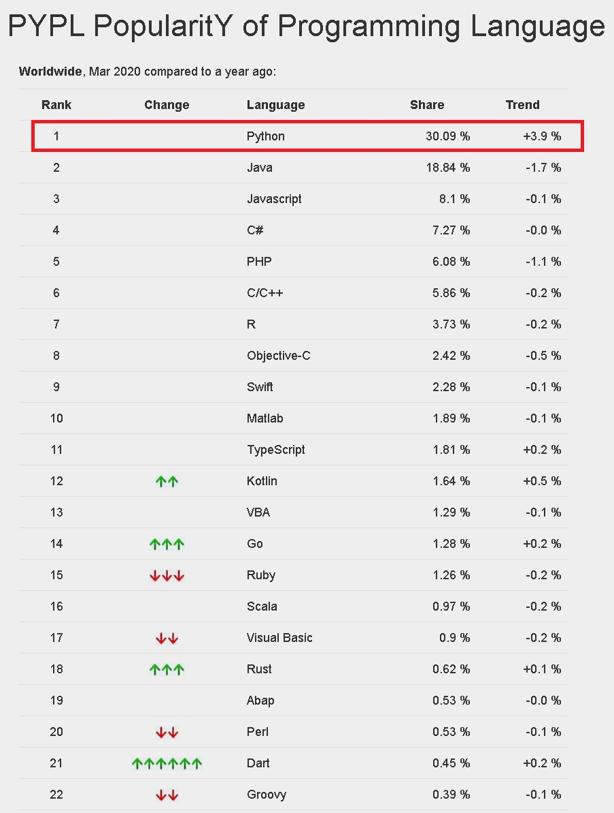

記事掲載：https://laptrinhcanban.com/ja
Pythonは優れたプログラミング言語であり、理解しやすい単純な文法構文を備えていますが、非常に短い行数で多くのタスクを実行できます。
Python言語はシンプルで理解しやすく、非常に便利であるため、AI人工知能の開発、ウェブサイトのデザイン、教育、ヘルスケアなど、生活の多くの重要な分野に適用されます。
プログラミングを学び始めようとしている人にとって、Pythonは学習カテゴリーのトップにあるべき言語です。なぜなら、Pythonは学びやすく、理解しやすく、そして仕事と生活の中で正しく適用できるからです。それだけでなく、Pythonはあなたの将来の成長のために多くの機会をもたらせる言語だと思います。
すでに他の言語の経験がある方にとってもPythonはもっと学ぶべきです。その理由は、IT業界の将来のトレンドがAIの開発でありまして、そしてPythonが一番の選択肢であり、情報処理と画像分析に大きな利点があるためです。
さらに、Python言語を取得できれば、Pythonで書かれたWebフレームワークであるDjangoの開発により、 Webデザインの分野でもチャンスを見つけることができます。

Pythonの歴史と起源
Pythonは、もともと1991年にGuido van Rossumによって開発され、Amoebaと呼ばれるオペレーティングシステムを管理するためでした。Pythonの利点により、開発後すぐにプログラマーに愛され、現在この記事の執筆時点（2020年3月1日）で、Pythonは世界で最も人気のある言語になりました。

出典： 世界中のプログラミング言語の人気度-Googleの情報に基づく
Pythonの特徴
Pythonと言えば、次の特徴を思い出すことができます。
無料のプログラミング言語
Pythonはオープンソースであるため、誰でも無料で使用できます。
Pythonのホームページから簡単にダウンロードしてインストールすることもできるし、Anacondaなどのサードパーティソフトウェアを介してインストールしてすぐに使用することもできます。
Pythonのインストール方法については、Pythonのインストールを参照してください。
構文がシンプルで、習得と理解が容易な言語
CやJavaのように文の終わりに句読点とコンマを厳密に記載せざるを得ない他の言語と比べると、Pythonはインデントを使用してコマンドを完了するだけで、かなり単純な文法を持っていると言われています。
習得と理解が容易なため、Pythonは初心者が習得すべき言語のリストの一番上にあるべきだと思います。
よく知られているアプリケーションの設計に使用される
Pythonによって書かれた以下の3つの有名なアプリケーションがあります。
- Dropbox
- Youtube
Pythonは、データ分析、処理、統計における利点を備えており、上記の3つのアプリケーションのような巨大なデータソース管理システムを必要とするアプリケーションの最初の選択肢となっています。
最も一般的なオペレーティングシステムで実行できる
Pythonは、次のような今日最も人気のあるオペレーティングシステムを実行できます。
- Windows
- Linux
- Mac OS
- iOS
- Android
Pythonはコンピューターで使用されるだけでなく、iOSおよびAndroidプラットフォームで実行されるアプリケーションを作成するためにも使用できます。
人工知能開発において絶対的な優位性を持つ
Pythonは豊富なライブラリと統合されており、このために特別に開発されているため、PythonはAI開発の分野で特に有利です。その中で最も有名なのはTensorflowです。
Pythonの基本について説明した後、Tensorflowを使用してAIを作成する方法をKiyoshiと一緒に調べてみましょう。
自己翻訳プログラミング言語に属し、オブジェクト指向プログラミング言語
PerlやJavaと同様に、Pythonはインタプリタプログラミング言語に属し、オブジェクト指向プログラミング言語として使用されます。
これらの概念について、次の記事で説明させて頂きます。
参考文献の豊富な情報源がある
Pythonプログラマーの人気により、マウスを数回クリックするだけでインターネット上でPythonリファレンスを簡単に見つけることができます。
Pythonに関する情報は、次のソースから入手できます。
さらに、 最も簡単な方法は、このWebサイトで学ぶことです。 laptrinhcanban.comはKiyoshiがプログラミングを学び始めたばかりのあなたのために特別に設計したサイトですから。
まとめ
この記事では、Python言語と特殊について学びました。結論として、Pythonと言えば、次のことを覚えておく必要があります。
- わかりやすい文法構造のシンプルなプログラミング言語です。
- 習得が容易で、初心者に適しています。
- データ分析、人工知能開発に利点があります。
URL Link
https://laptrinhcanban.com/ja/python/nhap-mon-lap-trinh-python/gioi-thieu-python/python-la-gi/
ホーム › 初心者向けのpython学習>>01.pythonの紹介